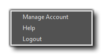
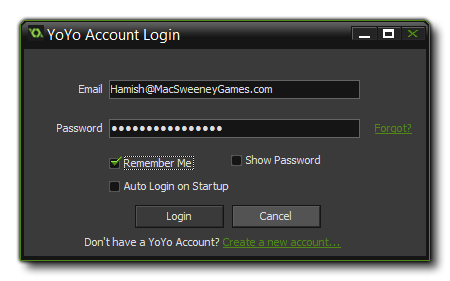

The Account Menu can be used to log into your YYA
(YoYo Account). You can log in to check your licence details or to
modify the information stored about you, and the menu shown above
is the menu shown after you have logged in to your YYA. If
you do not have an account yet, then simply click the Log In
menu option and then the link "Create a new account..." to
create your YoYo Account. 
Once you have created your account, you can then log in through
this menu, supplying your log in details as shown in the image
above. If you require help or more information about the YYA, then
you can select the "Help" option from the menu which will
take you to the appropriate YoYo Games knowledge base articles.
Note that this account is linked to the GameMaker:
Marketplace and the GameMaker: Player, and logging in to
your YoYo Account also creates an account for both those services.
You can find more information on both these services from their
respective menus, by selecting "Help".
| Converted from CHM to HTML with chm2web Standard 2.85 (unicode) |